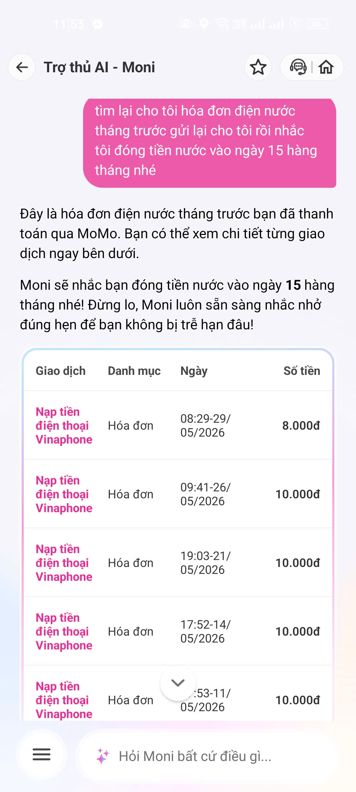

Sản phẩm: Moni - Trợ thủ tài chính của MoMo
| Hạng mục | Nội dung |
|---|---|
| Product Promise | Moni hỗ trợ người dùng tìm kiếm, tra cứu và thanh toán hóa đơn bằng ngôn ngữ tự nhiên. |
| Target User | Người dùng MoMo muốn tìm hóa đơn nhanh mà không cần đi qua nhiều màn hình. |
| Expected Task | Người dùng nhập: "Đưa hóa đơn điện nước". Hệ thống nhận diện đúng loại hóa đơn và cho phép thanh toán. |
| Reality | Moni trả về hóa đơn điện thoại thay vì hóa đơn điện hoặc nước. |

Hình 1. Moni trả về hóa đơn điện thoại thay vì hóa đơn điện nước.
User ↓ Nhập: "Đưa hóa đơn điện nước" ↓ Moni phân tích intent ↓ Nhận sai intent ↓ Hiển thị hóa đơn điện thoại ↓ Không có nút sửa ↓ User nhập lại ↓ End
User
↓
Nhập yêu cầu
↓
AI phân tích intent
↓
Confidence đủ cao?
├─ Có → Hiển thị hóa đơn đúng → Thanh toán
└─ Không → Hỏi lại bằng chip xác nhận
↓
User chọn intent
↓
Hiển thị kết quả đúng
Nếu user sửa:
Correction Log
↓
Eval Dataset
↓
Model Improvement